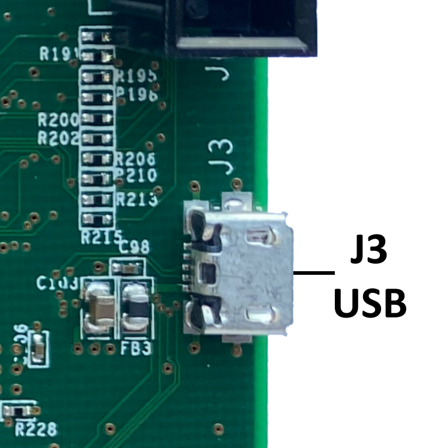

Kogna's USB UART COM Port
Kogna has a USB Port (J3 on Kogna's backside) that operates as a Virtual COM Port. A micro-USB cable is used to connect between Kogna and the PC Host.

The COM Port can used to display diagnostic information during Boot and about Ethernet activity and errors. Basic commands can be entered to set things like the Ethernet IP Address. When connected a COM port should show up in Windows Device Manager as shown below. Note Windows may assign a different COM Port number than shown below. If your PC has more than one COM Port (or you have more than one Kogna) you might need to try each by trial and error to see which is connected to Kogna. You might also unplug the USB cable to Kogna to see which COM Port is removed to determine which it is. Note the USB COM Port is powered from USB power so should remain connected and powered whether or not Kogna has +5V power applied.
The COM Port is connected to a UART on Kogna's DSP that operates at 115200 Baud. 8-bit data. No Parity. 1 Stop bit. No Flow Control. A Program such as Teraterm or HyperTerminal (or other serial terminal emulators) can be used to display output or enter input commands. TeraTerm can be downloaded from cnet.com.
Below is shown a Primary boot, Delay, then Secondary boot sequence on startup. The Primary boot loader is loaded at the factory. The Secondary boot is of the Firmware Version Flashed into Kogna using Flash New Version. If secondary booting is not successful see here for recovery.
The 'I' command can be used to display or manually set the Ethernet IP Address.
Enter 'I' then Enter to display the requested and assigned IP Address
A requested IP Address of 0 requests the Network DHCP Server to assign the IP Address. An address of 0 may be entered as '0' or '0.0.0.0'.
To manually specify an IP Address enter 4 decimal byte numbers separated by periods. Note changing the IP Address will Flash the setting to Flash memory to be requested on the next Boot or new network connection.
See example below. The 'I' command is used to report that DHCP is used and the Assigned address is 192.168.68.126. Then the IP Address is set to 192.168.68.200. The Ethernet cable is disconnected and re-connect to have the new IP Address assigned. A multicast packet is received from the Host PC 192.168.68.118 and responded to so the PC obtains the new IP Address (and Serial Number).